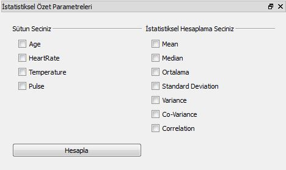
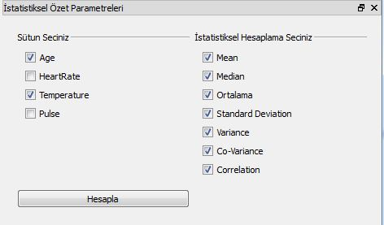

Özet Menüsü
Özet Menüsü:
Bu alt menüyle aktif veriseti içerisinde bulunan özelliklerden numerical olanlar
yani sayısal ifadeler için istatistiksel özetler hesaplanabilir. İstatistiksel özetler, veriseti hakkında genel bir
kanıya varmamıza sağlar. PIVA'da aşağıdaki seçenekler istatistiksel özet içinde hesaplanabilir.
- Mean
- Median
- Ortalama
- Standart Sapma
- Variance
- Co-Variance
- Correlation
Kullanımına bakacak olursak;
PIVA'nın
İstatistik menüsünden
Özet altmenüsüne tıklandığı zaman ekranın
Parametreler için ayarlanan alanına İstatistiksel Özetleri hesaplamak için gereken parametreleri
kullanıcıdan alan ekran gelecektir.

Bu ekranda istatistiksel özetleri hesaplanacak numeric sütunlardan istenilenler seçilir, ardından hesaplanması
istenen özellikler seçilir ve
Hesapla butonuyla bu işlem gerçekleştirilir.
Bu işlemin sonucunda hesaplanan sonuçlar PIVA ana ekranının sol tarafında bulunan
Çıktı alanına yazılacaktır.
Eldeki verisetinde iki sütunun kendi aralarındaki ve içlerindeki istatistiksel özetleri hesaplanmış ve aşağıda gösterilmiştir.

Yapılması istenen özellikler/işlemler resimdeki gibi seçilmiştir.
Age
Minimum : 21.0
Maximum : 50.0
Mean : 37.62
Median : 37.0
Ortalama : 37.62
Standard Deviation : 6.39809346603
Variance : 40.9356
Temperature
Minimum : 96.2
Maximum : 101.3
Mean : 98.33
Median : 98.3
Ortalama : 98.33
Standard Deviation : 0.952102935611
Variance : 0.9065
Co-Variance : -0.812727272727
Correlation : -0.132082580108
Hesaplanan istatistiksel özet sonucunda elde edilen çıktı.